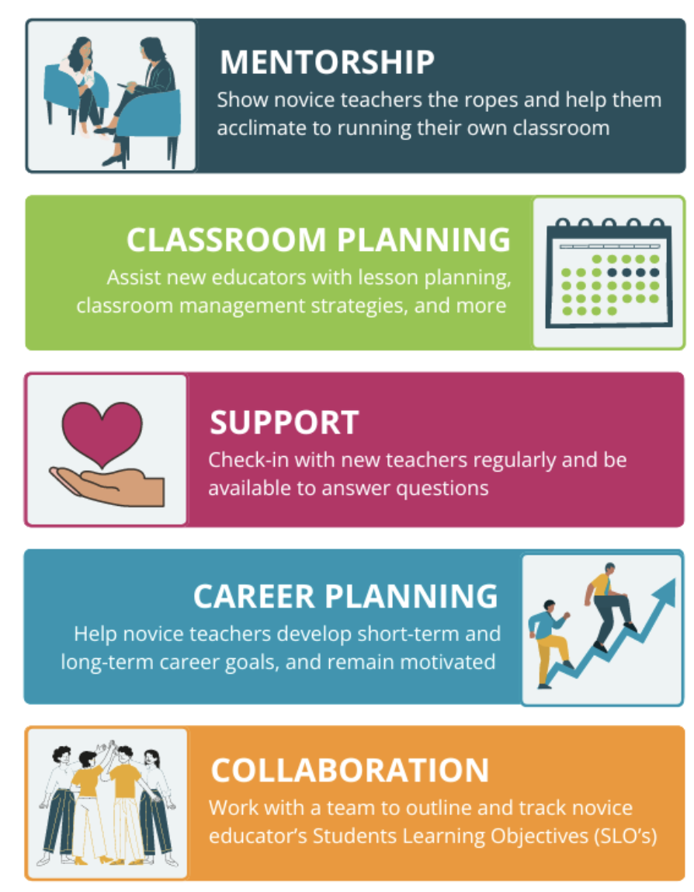

Elementary Teacher
Anchorage School District 1995-2023 Kindergarten - 2nd Grade
My teaching career began in a tiny closet of a kindergarten classroom, sharing the space with two master partner teachers who embraced my youth and welcomed me into the world of education. Their mentorship set me on a path that would span five schools, hundreds of students, and 28 years of teaching before I retired to become a proud Pokni—Grandma in Choctaw. From the very beginning, my goal was to create the best possible learning experience for all students. I wanted to instill in them the confidence that they could and would learn, while equipping them with the tools to support that growth. Together, we built positive classroom communities where every student was valued, ideas were respected, and collaboration was the norm. I recognized that each student had unique needs, strengths, and aspirations—and we worked together to ensure those needs were met so that every child could reach their fullest potential. I finished my career, as I started in a kindergarten classroom. While life and education has changed over my career, my desire to inspire and support young children as they enter their educational career did not.
Doctorate
University of South Carolina 2020-2023 STEM Education
Driven by a desire to further my education and make a meaningful impact on the field of education, I embarked on the journey to earn my doctorate in STEM education. Why STEM, you might ask? Because of my deep passion for math and science—and my curiosity to learn more about engineering. Although I never expected to enjoy research, my dissertation became a transformative learning experience that motivated me to focus not just on students, but on empowering teachers so they can better support their students.
My study examined the impact of professional development on teachers’ implementation and use of mathematical discourse. The findings revealed that it took two years of ongoing, situated professional development to create lasting changes in teaching practices. Unfortunately, most professional development today is a one-time, quick fix. If we truly want to improve education, we must rethink and reform how we approach professional learning for educators.
College Professor
University of Missouri 2016 - present Information Systems and Learning Technology
When the opportunity arose to teach a college course at the University of Missouri, I eagerly embraced the challenge and the chance to grow as an educator. Over the past ten years, I have taught a variety of courses within the Information Systems and Learning Technology Department. Most recently, I reorganized and now teach Introduction to Web Design and Development, updating the curriculum to align with current trends and goals in website development.
Teaching college students online requires a different skill set than working with elementary students or teachers. With limited face-to-face interaction, building connections can be challenging. Student motivation varies widely, and often I need to reach out multiple times to support students in completing their work. Yet, when students seek help and gain understanding, I witness the same spark of excitement and “lightbulb moment” that I experienced in my earlier teaching years. The joy of learning remains as vibrant as ever.
Mentor and Supervisor
Anchorage School District 2000-2023 New Teacher Mentor
University of Alaska- Fairbanks 2023-present Elementary Education Supervisor
I take great pride in mentoring new teachers and supervising student interns, recognizing the critical role these experiences play in shaping confident and effective educators. Through personalized guidance, constructive feedback, and collaborative reflection, I support emerging teachers as they develop their instructional skills, classroom management strategies, and professional identities. Mentoring is more than a professional responsibility—it’s a meaningful relationship built on trust, support, and mutual growth. I view these roles as opportunities to give back to the teaching profession that has shaped my own journey. By investing time and energy into the development of future educators, I help ensure that the profession continues to evolve and improve. This reciprocal relationship enriches me and my mentee, fostering a community of educators committed to excellence, collaboration, and lifelong learning.
